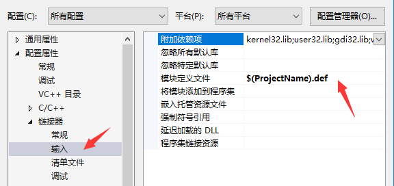

简介
由于一些特殊的情况，操作系统提供的密码复杂度检测，不能满足我们的需求。
比如 小写字母 大写字母 数字 特殊符号 我们需要全都存在（四选四），但是操作系统只能（四选三），
又或者类似 p@ssw0rd 之类的密码，虽然复杂度要求满足，但是太常见，很容易被密码字典破解。
所以我们需要注册一个自定义的密码检测规则，在创建或修改密码时，直接进行检测和处理。
过滤器的注册
微软操作系统提供了一种 Password Filter DLL 的方式，可以在 密码保存之前 对其进行处理。
该功能需要导出三个函数，而且必须编译为DLL类型，32位系统使用32位DLL，64位使用64位DLL。
1 | BOOLEAN InitializeChangeNotify(void); |
1 | NTSTATUS PasswordChangeNotify( |
1 | BOOLEAN PasswordFilter( |
其中 InitializeChangeNotify 函数用来初始化DLL信息，返回 TRUE 表示成功，FALSE 表示失败。
其中 PasswordFilter 函数用来自定义我们的过滤规则，参数 Password 就是需要检测的密码，前两个
参数是对应的 账户名称，参数 SetOperation 为 TRUE 时，表示 密码新建 操作，反之为 密码修改 操作，
返回 TRUE 表示 允许 本次操作，返回 FALSE 表示 拒绝 本次操作。
其中 PasswordChangeNotify 函数会在所有检测都已通过，系统准备存储该密码时调用，该函数多数是
做信息记录用，而且只能返回 STATUS_SUCCESS 返回值。
注册该过滤器DLL时，我们需要先把DLL文件，复制到操作系统 System32 目录下，注意用程序复制时，
会涉及到64位系统中32位程序的目录重定向问题。然后在如下注册表路径下
1 | HKEY_LOCAL_MACHINE\\SYSTEM\\CurrentControlSet\\Control\\Lsa |
存在一个 Notification Packages 注册表值，是 REG_MULTI_SZ 类型，如果不存在，需要新建一个，
注意 不要删除 原来自带的数据，要在原字符串 后边附加 新字符串，填写DLL的文件名，不要 .dll 后缀。
所有操作完毕后重启操作系统，该DLL过滤器就会被操作系统加载起来。
过滤器的代码
如下为相关三个函数的代码，我们只处理 PasswordFilter 函数，其余两个函数直接返回成功。
1 | BOOLEAN __stdcall InitializeChangeNotify(void) |
1 | NTSTATUS __stdcall PasswordChangeNotify( |
1 | BOOLEAN __stdcall PasswordFilter( |
这里需要注意的地方是，每个函数都需要声明 __stdcall 类型，但是这样在头文件中使用extern "C" 导出函数时，就变成 _InitializeChangeNotify@0 的样式，导致DLL加载失败，
所以我们需要创建一个 .def 文件来代替 extern "C" 声明导出函数，文件内容如下
1 | EXPORTS |
然后在工程配置中，配置属性 -> 链接器 -> 输入 -> 模块定义文件，加入该 .def 文件

最后如果在写过滤规则时，引入了其他的库，可以使用 多线程 (/MT) 配置，把相关函数编译到DLL中。